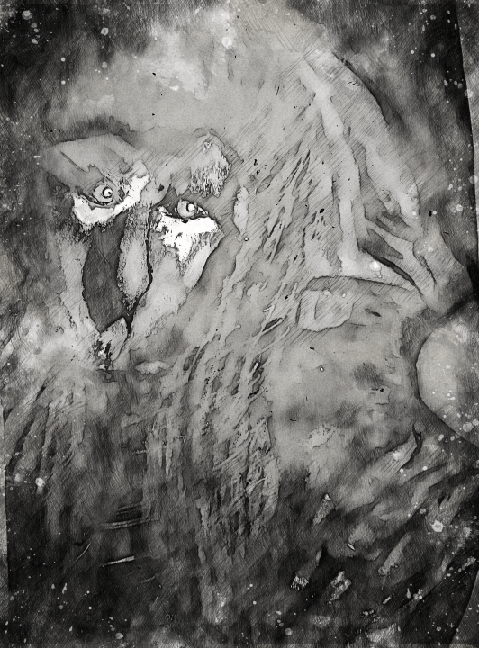

VFAT-FEK
The quest for the elusive entity known as VFAT-FEK has been ongoing for 10 years. Despite reaching many who associate with VFAT-FEK, the study remains uncertain. It seems VFAT-FEK manifests as a universal perception; a cursed individual? A threat? Retribution? Despite this, such an existence is marred by perpetual ostracization from the world.